PixelLab animate_object (v3, 9프레임) 파이프라인 검증. 부유=idle / 다리=run 두 케이스. 좋으면 나머지 6 몬스터 배치.
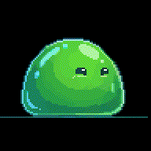
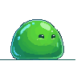
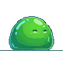
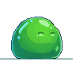
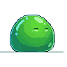
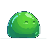
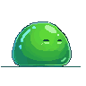
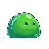
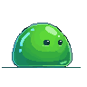
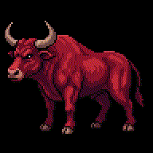
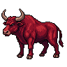
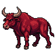
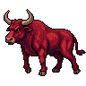
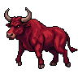
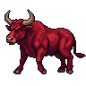
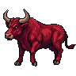
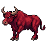
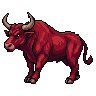
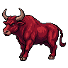
weaver · 디자인 세션 · 2026-06-17 · PixelLab animate_object v3 · slime aa91fb92 / charger 8758ac8e · unlisted